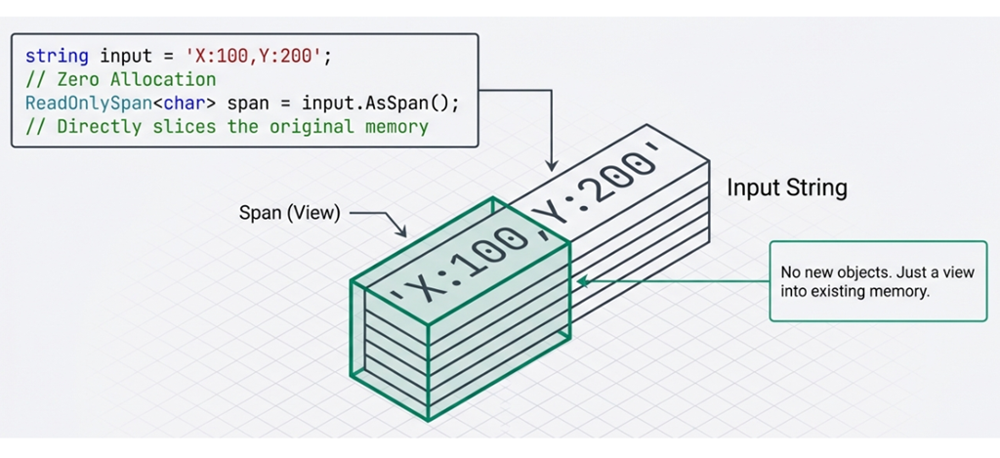

第 4 章：不可變設計
軟體開發有個看似矛盾的真理：讓資料難以改變，反而能讓程式更好維護。
在傳統的物件導向程式設計中，我們習慣變數就是「可以變」的。但這種彈性往往也是 bug 的溫床：當一個物件的狀態可能被任何程式碼修改時，追蹤問題就會變得格外困難。
試想，你把一份文件放在公司的共用資料夾，任何人看到都可以隨手改幾個字，最後你還能相信這份文件的內容嗎？這就是「可變共享狀態」（mutable shared state）帶來的混亂。
不可變設計（immutable design）的核心思想就是反其道而行：物件一旦建立，就不允許修改。如果需要改變，那就建立一個新的。
本章會介紹 C# 如何支援這種設計模式：先從最基本的 struct 與 class 選擇談起，再進一步看現代 C# 為 immutable design 提供的 record 型別與 init 存取子。
4.1 為什麼需要不可變設計？
在深入語法之前，先來了解可變狀態可能導致哪些問題，而不可變的設計能夠解決什麼問題。
考慮底下這個看似無害的程式碼：
這段程式碼有幾個潛在問題：
- 副作用不明確：呼叫
ProcessPayment會修改傳入的customer物件，但從函式簽章看不出來。呼叫端若沒預期到這個副作用，就可能在後續流程中讀到被改過的資料，進而產生 bug。 - 難以追蹤：如果
Balance出錯，你需要搜尋整個程式庫來找出所有可能修改它的地方。 - 多執行緒不安全：多個執行緒同時修改同一個物件會導致競爭狀況（race condition）。
不可變設計的好處
不可變設計透過「一旦建立就不能修改」的原則，帶來以下好處：
- 可預測性：物件的狀態不會在背後偷偷改變，程式碼行為更容易預測。
- 執行緒安全：不可變物件天生就是執行緒安全的，因為沒有「修改」這個動作。
- 無副作用：函式不會修改傳入的參數，避免隱藏的副作用。
- 更好的快取：不可變物件可以安全地被快取和重用，因為內容永遠不變，多個地方可以共享同一個實例而不必擔心被修改（例如字串池、組態物件等）。
補充說明
- 字串池（string pool/interning）：.NET runtime（CLR）會自動將相同的字串字面值（literals，如
"Hello"）指向同一個記憶體位置，避免重複配置。例如程式中的所有"Hello"都共享同一個實例。參閱：System.String.Intern 方法。- 組態物件（configuration object）：應用程式的設定資料（如連線字串、API 端點等）。因為不可變，可以安全地在整個應用程式中共享單一實例。參閱：Options pattern in .NET。
4.2 struct vs. class：選擇正確的型別
在 C# 中，struct 和 class 是兩種基本的使用者自訂型別；前者為實值型別（value type），後者為參考型別（reference type）。雖然它們看起來很像——都能定義屬性、方法和建構式——但它們在記憶體中的行為卻天差地遠。搞清楚這點，是設計良好型別的第一步。
實值型別 vs. 參考型別
實值型別與參考型別的一個核心差異在於記憶體行為。且看以下範例：
這裡用 struct 定義了一個實值型別 Point，以及用 class 定義了一個參考型別 Customer。接著看如何使用它們：
// 實值型別的行為：複製完整內容
Point p1 = new Point { X = 10, Y = 20 };
Point p2 = p1; // p2 是 p1 的完整副本
p2.X = 100; // 只有 p2 被修改
Console.WriteLine(p1.X); // 輸出 10（p1 沒變）
// 參考型別的行為：複製參考
Customer c1 = new Customer { Name = "Alice" };
Customer c2 = c1; // c2 和 c1 指向同一個物件
c2.Name = "Bob"; // 修改的是同一個物件
Console.WriteLine(c1.Name); // 輸出 "Bob"（c1 也變了！）這個範例清楚展示了兩者的差異：
- 實值型別（struct）就像「名片」：你給朋友一張名片，他在上面亂塗鴉，並不會影響你皮夾裡的那張名片。你們各自擁有獨立的副本，互不干擾。
- 參考型別（class）就像「Google Doc 連結」：你把 Google Doc 的連結分享給朋友，他在文件裡打了一行字，你重新整理頁面也會看到那行字。你們共享同一個內容，可能互相干擾。
何時使用 struct？
建議在以下情況使用 struct：
- 小型資料結構：如座標點、RGB 顏色、日期時間範圍，或字典中的鍵值組（key-value pair）等。
- 不可變：建立後不會修改其狀態。
- 不需要多型：不需要繼承其他類別。
以下範例展示一個典型的應用場景：
public readonly struct Money
{
public decimal Amount { get; }
public string Currency { get; }
public Money(decimal amount, string currency)
{
Amount = amount;
Currency = currency;
}
public Money Add(Money other)
{
if (Currency != other.Currency)
throw new InvalidOperationException("幣別不同，無法相加");
return new Money(Amount + other.Amount, Currency);
}
}這個 Money 結構代表一個不可變的貨幣金額，包含兩個核心資訊：金額（Amount）和幣別（Currency）。這種設計能夠確保貨幣計算的安全性——例如 Add 方法會檢查幣別是否相同，避免誤將美元和台幣直接相加。
注意第 1 行的 readonly struct 宣告——在這個 Money 範例中，它能確保結構的狀態在建構後不再改變。Add 方法會傳回一個新的 Money 實例，而不是修改現有的。不過要留意：readonly struct 保證的是欄位本身不能再被重新指派；若欄位型別本身是可變的參考型別，仍然不代表深層不可變（deep immutability）。例如：
readonly struct 防止你把 Items 指向另一個 List<string>，但無法阻止你對這個 List<string> 本身呼叫 Add。若需要真正的深層不可變，應使用不可變集合（見本章 4.9 節）。
何時使用 class？
當你的型別不符合 struct 的使用條件時，就應該使用 class：
- 需要繼承：
class支援類別繼承。 - 實例較大：內容包含較多欄位或複雜的資料結構，使用
class可避免大量複製的效能開銷。 - 需要參考語意：多個變數需要指向同一個實例。
- 生命週期管理：需要追蹤物件的建立與銷毀。
常見錯誤：可變的 struct
一種常見的不良設計是把結構設計成允許修改。例如底下的反面教材：
這是一個典型的反模式（anti-pattern）。當你習慣了 struct 是實值型別時，這種可變性會導致令人困惑的行為，或帶來意想不到的後果。如以下範例：
MutablePoint p = new MutablePoint { X = 10, Y = 20 };
p.Move(5, 5); // p 變成 (15, 25)
// 但是...
MutablePoint[] points = new MutablePoint[1];
points[0] = new MutablePoint { X = 10, Y = 20 };
points[0].Move(5, 5); // 對於陣列，這行會成功修改元素
Console.WriteLine($"{points[0].X}, {points[0].Y}"); // "15, 25"
// 但是...更令人困惑的情況
IList<MutablePoint> list =
new List<MutablePoint> { new MutablePoint { X = 10, Y = 20 } };
list[0].Move(5, 5); // 修改了「複本」後隨即遺失
Console.WriteLine($"{list[0].X}, {list[0].Y}"); // "10, 20"對於陣列，直接對索引存取的元素呼叫方法是有效的，因為陣列的索引子在 C# 語言規格中是「可取址的變數」（但如果陣列被傳遞出去，這種副作用可能很危險）。可是在透過 IList<T> 介面來存取泛型串列的情況，索引子回傳的是 struct 的複本，所以 Move 方法修改的只是一個暫時的複本，原本在 list 中的資料並未被改變。這就是所謂的「靜默失敗」（silent failure），是最難除錯的一類問題。
原始碼： DemoMutablePoint
還有一種情況可能也令人困惑：
為了避免這類問題，實務上通常建議把 struct 設計成不可變。使用 readonly struct 可以讓編譯器幫你確保這一點。
readonly struct：編譯器強制的不可變性
readonly struct 可以確保結構中的所有欄位都是唯讀的，這不僅能清楚表達設計意圖，還能讓編譯器進行更多優化：
如果你試圖在 readonly struct 中定義可變欄位或寫入欄位的方法，編譯器會產生錯誤。你也可以只將特定的方法標記為 readonly，表示該方法不會修改任何欄位：
原始碼： DemoReadonlyStruct
到這裡，設計一個唯讀結構看起來相當直觀。不過，這裡還有個隱藏的效能陷阱：如果不了解編譯器的行為，很容易在不知不覺中付出額外成本。
防禦性複製：隱藏的效能陷阱
當你在結構中混合使用 readonly 和「非 readonly」方法時，可能會觸發編譯器的防禦性複製（defensive copy）行為。這是一個重要但容易被忽略的效能問題。
什麼是防禦性複製？
當一個 readonly 方法呼叫非 readonly 方法時，編譯器無法確定被呼叫的方法是否會修改結構的狀態。為了保證 readonly 方法的承諾（不修改結構內容），編譯器會採取保險措施：先複製一份結構的副本（防禦性複製），然後在這個副本上呼叫非 readonly 方法。
這就像是你去圖書館借閱珍本古籍（readonly），卻需要在上面畫重點（呼叫方法）。館員為了保護古籍，先影印一份副本給你（防禦性複製）。你實際標記的是副本（修改狀態），最後離開時副本被丟棄。
結果是：古籍確實沒事（安全），但多花了影印的時間和紙張（效能損耗）。
參考以下範例：
在 PrintInfo 方法中呼叫 LogState 時，即使 LogState 實際上沒有修改任何欄位，編譯器仍會：
- 複製一份
Point結構。 - 在副本上呼叫
LogState。 - 丟棄這個副本（因為
PrintInfo是readonly，不能保留修改）。
原始碼： DemoReadonlyMethod
補充：readonly 欄位與 in 參數
防禦性複製不只會發生在「readonly 方法呼叫非 readonly 方法時」。
更精確地說，當一個 struct 執行個體處於唯讀脈絡中，而你又呼叫它的非 readonly instance 成員時，編譯器就會先建立一份副本，然後在副本上進行呼叫，以保證維持「唯讀語意」。
所謂「唯讀脈絡」，是指編譯器在靜態分析時就能確認某個執行個體的位置不允許被重新賦值的情況。具體來說，只要你無法對該位置執行 myStruct = newValue; 這樣的賦值，它就處於唯讀脈絡中。readonly 欄位和 in 參數，就是這種唯讀脈絡的常見例子。
例如底下這個範例，Value 雖然看起來只是讀取資料，但讀取 property 本質上也是在呼叫 instance 成員。如果它沒有標示為 readonly，那麼透過 readonly 欄位或 in 參數來存取它時，都會觸發防禦性複製：
public struct Measurement
{
private int _value;
// 未標示 readonly 的 getter
public int Value
{
get { return _value; }
}
public Measurement(int value)
{
_value = value;
}
}
public class Holder
{
public readonly Measurement Data;
public Holder(Measurement data)
{
Data = data; // 一般值複製，不算防禦性複製
}
public void Exec()
{
var value = Data.Value; // 會觸發防禦性複製
}
public static void Exec(in Measurement data)
{
Console.WriteLine(data.Value); // 也會觸發防禦性複製
}
}在這個例子裡，Holder 建構式的參數 data 是一般的「以值傳遞」（by-value）參數，而 Data = data; 也只是一般的值複製；它們都不是為了保護 readonly 語意而額外產生的暫時副本，因此不算防禦性複製。
如果把 Value 的 getter 明確標示為 readonly，像這樣：
或者乾脆把整個 Measurement 宣告成 readonly struct，就能避免在此過程當中觸發編譯器的防禦性複製。
原始碼： DemoDefensiveCopy
延伸閱讀
微軟文件 Structure types (C# reference) 的 readonly instance members 小節提到：在
readonlyinstance 成員中，如果呼叫了非readonly成員，編譯器會先建立結構的副本，再在副本上呼叫該成員，因此原始執行個體不會被修改。這段話說明了防禦性複製的核心機制，而
readonly欄位與in參數則是同樣原理在其他唯讀脈絡中的表現。
如何自行驗證是否發生防禦性複製？
第一種方式是看編譯器警告。當 readonly 成員呼叫非 readonly 成員時，編譯器通常會發出 CS8656 警告，指出這次呼叫會產生 this 的隱含複本。建議使用 dotnet build -t:Rebuild，確保專案真的重新編譯，才不會因為增量建置而漏看警告。
不過要注意：沒有警告，不代表沒有防禦性複製。 例如透過 readonly 欄位或 in 參數來呼叫非 readonly instance 成員時，就會發生防禦性複製，但編譯器不一定會主動提示。這是因為 CS8656 只診斷「在方法體內部」直接偵測到的靜態模式；透過欄位或參數間接產生的情況，C# 設計上視為使用端的責任，目前並非所有路徑都有對應的診斷規則。
第二種方式是設計一個「可觀察副作用」的測試。例如在 struct 中放入一個會修改欄位的非 readonly 方法：
如果你用一般變數連續呼叫兩次，結果會遞增；但若透過 readonly 欄位或 in 參數來呼叫，若兩次都得到相同結果，就表示每次都是在新的副本上操作，原本的狀態並沒有被保留下來。
例如：
這裡的兩次呼叫都是作用在同一個區域變數 s 上，因此第二次會延續第一次修改後的狀態。
相對地，若透過 readonly 欄位來呼叫：
這裡的 Data 是 readonly 欄位，因此每次呼叫 IncrementAndGet() 時，編譯器都會先建立一份副本，再在副本上執行遞增；原本的 holder.Data 並沒有被修改。若改成 in 參數，觀察到的行為也是一樣。
第三種方式是檢查 IL（中介語言）。這是最精準的方法，因為你可以直接看到編譯器是否產生了額外的副本操作。若你想從語言實作層面完全確認，可以使用反組譯工具來查看 IL（例如 SharpLab、ILSpy）。
效能影響
如果結構較大或這個方法被頻繁呼叫，防禦性複製的成本會累積：
試想，如果 LargeStruct 包含大量欄位，每次呼叫 Helper 都會隱含地複製整個結構，而這個複製操作完全沒有必要，等於是純粹的效能浪費。
請注意：這裡刻意使用一般
struct，而不是readonly struct。如果整個型別宣告為readonly struct，那麼它的 instance 成員（建構式除外）都會隱含視為readonly，上述Helper範例就不會觸發這種防禦性複製。
如何避免？
解決方案很簡單：將不會修改狀態的方法明確標記為 readonly：
這樣一來，結構中的整條方法呼叫鏈都是 readonly 方法，中間就不會衍生隱藏的「防禦性複製」成本。
最佳實務
對於所有不修改結構狀態的方法，都應該明確加上
readonly修飾詞。這不僅能避免防禦性複製，還能讓程式碼的意圖更清晰。相關微軟文件：readonly (C# reference)、 IDE0251: Member can be made ‘readonly’
ref struct：只能存在於堆疊上
C# 7.2 引入了 ref struct，這是一種特殊的結構，在微軟文件 ref structure types (C# reference) 開頭的第一句話是這麼介紹它的：
Use the ref modifier when declaring a structure type. You allocate instances of a ref struct type on the stack, and they can’t escape to the managed heap.
也就是說，以 ref struct 型別所建立的結構實體（instance）本身受到 stack-only 限制，不能逃逸到堆積（managed heap）上。
大多數情況下，你不會需要定義自己的 ref struct 型別，但了解這個概念有助於理解 .NET 的高效能 API，例如 Span<T> 和 ReadOnlySpan<T>（本書第 13 章有介紹）。
底下是一個簡單的 ref struct 範例：
寫法跟一般結構沒有太大差別，只是宣告的時候多加了 ref 關鍵字。不過，由於 ref struct 是一種 stack-only 的特殊結構（如本節開頭所說），編譯器為了確保這點，在使用時有許多嚴格的限制，包括：
- 不能作為類別或一般結構的欄位。
- C# 13 之前不能實作介面；C# 13 開始能實作介面，但無法轉型為介面型別。
- 不能裝箱（boxing）。
- 不能用於陣列元素。
- 不能跨越
await或yield邊界存活。 - 不能被 Lambda 運算式或區域函式捕捉（capture），因此不能讓它跨越這類閉包邊界存活。
以下幾個範例分別展示違反相關限制時會出現的編譯錯誤。
- 不能作為類別或一般結構的欄位：
- 不能用於陣列元素：
- 不能裝箱（boxing）：
- 不能跨越
await使用：
換句話說，ref struct 可以出現在 async 方法中，但不能在 await 之前建立後，又在 await 之後繼續使用。相同的原則也適用於 iterator 方法中的 yield。
另外要留意的是，在 C# 13 之前，ref struct 完全不能實作介面。C# 13 開始雖然可以實作介面，但仍然無法轉型為介面型別（因為轉型會導致裝箱）。
可是，為什麼 ref struct 會有這麼多限制？它到底可以用在哪裡呢？
簡單來說，這些限制都是為了確保 ref struct 永遠不會逃逸到堆積上。至於為什麼這件事這麼重要，接下來先看它的典型應用場景，再回頭說明背後的技術原因。
ref struct 應用場景：零配置（zero-allocation）處理
前面提過，ref struct 主要是用在需要高效能的場景。其中一個最常見的應用是 Span<T> 與 ReadOnlySpan<T>。沒錯，它們就是以 ref struct 來宣告的：
舉例來說，當我們要從字串 "X:100,Y:200" 解析出數值時：
- 一般做法：使用
Substring或Split。這會產生多個暫時的字串物件（堆積配置），增加垃圾回收（GC）的壓力。 - 高效能做法：使用
ReadOnlySpan<char>。它可以在不產生任何新字串物件的情況下，直接對原始字串進行「切片」（slice）。
範例：
此範例點出了 Span<T> 和 ReadOnlySpan<T> 的一個特色：它們像是一個視窗，可以直接看向既有的記憶體，而不需要複製內容。也就是說，它建立的是對既有資料的檢視，而不是資料本身的副本。

這種「視窗」設計讓它很高效，但使用時有一個重要限制需要留意：Span<T> 與 ReadOnlySpan<T> 本身受到 stack-only 限制，不能逃逸到堆積（heap）上；但它們所參照的資料不一定在堆疊中，也可能來自堆積上的陣列或字串，甚至是未託管記憶體（unmanaged memory）。
至於它們為什麼不能逃逸到堆積（heap）上，原因如下：
由於 Span<T> 和 ReadOnlySpan<T> 被設計成能夠指向任何記憶體區域，因此其內部可能包含指向堆疊（stack）記憶區塊的指標（例如指向一個透過 stackalloc 配置的暫存陣列）。如果允許這個結構跑到堆積（heap）上，一旦方法返回，堆疊記憶體隨之釋放，那個指標就會變成指向無效位址的「懸空指標」（dangling pointer），進而導致嚴重錯誤。
更多關於 Span<T>、stackalloc 運算式、與高效能記憶體操作的細節，請參閱第 13 章。
Note
一般情況下使用
readonly struct就足夠了。只有在需要包裝堆疊記憶體或進行極端效能優化時，才需要考慮ref struct。
4.3 record：簡化資料型別的定義
有些型別的主要責任是保存和傳遞資料，例如 DTO、領域事件和應用程式設定。使用這類型別時，我們通常關心的是「資料內容是否相同」，而不是「兩個變數是否指向同一個物件」。除此之外，我們也希望物件能顯示有意義的內容，並能方便地建立一份只改動部分資料的副本。
如果使用一般的 class，這些功能往往需要自行實作，例如覆寫 Equals、GetHashCode 和 ToString，以及另外撰寫解構或複製物件的程式碼。每一項都不算困難，但合在一起便會產生不少重複的樣板程式碼。
C# 9 引入的 record，就是為了簡化這類以資料為核心（data-centric）的型別設計。接下來會先介紹 record 的基本宣告與編譯器提供的功能，再說明它的值相等性，最後比較 record class 和 record struct 的使用時機。
record 宣告語法
定義 record 的語法很簡潔：
// 主要建構式語法（primary constructor）
public record Person(string Name, int Age);這種把參數直接寫在型別名稱後面的形式，稱為位置式 record（positional record）。就這麼一行，編譯器便會根據 Name 和 Age 產生多個實用成員，包括：
Name和Age對應的init屬性。（init存取子的介紹請參閱稍後的 4.4 節。）- 編譯器產生的值相等性相關成員，例如
Equals、GetHashCode，以及==、!=運算子。 - 有意義的
ToString輸出，例如Person { Name = Alice, Age = 30 }。 Deconstruct方法，支援解構語法。- 支援
with運算式所需的編譯器產生成員（詳見 4.5 節；record class與record struct的內部機制略有不同）。
何謂主要建構式？
主要建構式（primary constructor）會把建構式參數直接寫在型別名稱後面。這項語法最初在 C# 9 隨著 record 引入，後來在 C# 12 擴展到一般的 class 和 struct。
對一般的 class 或 struct 而言，主要建構式參數不會自動變成欄位或屬性；對位置式 record 而言，編譯器則會產生對應的 public 屬性。這正是上例能以一行程式碼定義
Name和Age的原因。
以下範例展示了 record 的幾個方便功能：
// 1. 具有 init 存取子的屬性
var person = new Person("Alice", 30);
// person.Name = "Bob"; // ✗ 編譯錯誤：init 屬性只能在初始化時設定
// 2. ToString 輸出更有意義
Console.WriteLine(person);
// 輸出：Person { Name = Alice, Age = 30 }
// 3. 值相等性：資料內容相同便視為相等
var person2 = new Person("Alice", 30);
Console.WriteLine(person == person2); // True（內容相同）
// 4. Deconstruct 解構語法
var (name, age) = person;
Console.WriteLine($"{name} is {age} years old"); // Alice is 30 years old
// 5. 支援 with 運算式（詳見 4.5 節）
var olderPerson = person with { Age = 31 };
Console.WriteLine(olderPerson); // Person { Name = Alice, Age = 31 }如果用傳統的 class 來寫同樣的功能，通常需要多出許多樣板程式碼（boilerplate code）。
Note
record的核心是「以資料為中心的語言支援」，本身並不保證物件不可變。上面的Person採用位置式record class宣告，所以Name和Age會產生為init屬性；如果改在 record 本體中宣告一般的set屬性，仍然可以建立可變的 record。此外，
init限制的是屬性在初始化後不能被重新指派。若屬性參考的是可變物件，該物件的內容仍然可能被修改。4.4 節會進一步說明init存取子。
值相等性
前面列出的功能中，最值得先掌握的是值相等性（value equality）。以下範例展示了一般 class 和 record 的行為差異：
// class 使用參考相等
class PersonClass
{
public string Name { get; set; }
public int Age { get; set; }
}
var p1 = new PersonClass { Name = "Alice", Age = 30 };
var p2 = new PersonClass { Name = "Alice", Age = 30 };
Console.WriteLine(p1 == p2); // False（不同的實例）
// record 使用值相等
record PersonRecord(string Name, int Age);
var r1 = new PersonRecord("Alice", 30);
var r2 = new PersonRecord("Alice", 30);
Console.WriteLine(r1 == r2); // True（相同的值）關鍵差異：
- class 的預設行為：
p1 == p2比較的是參考位址。雖然p1和p2的內容完全相同（Name和Age都一樣），但它們是記憶體中的兩個不同實例，所以比較結果是False。 - record 的預設行為：編譯器會替 record 產生
Equals、GetHashCode和==等值相等性成員。以上面的PersonRecord(string Name, int Age)為例，兩個 record 會根據Name與Age的值來判斷是否相等，而不是只判斷兩個變數是否指向同一個物件。
Note
record的值相等性並不是「遞迴式的深層比較」。如果某個成員本身是陣列、集合或其他參考型別，該成員仍會按照它自己的相等性規則來比較。例如兩個內容相同、但分別建立的陣列，預設仍可能被視為不同的值。
原始碼： DemoRecord
對於以資料為核心的型別，record 的比較行為通常更符合需求：兩個實例是否相等，取決於其資料成員各自的相等性規則，而不是物件位址。
這個特性讓 record 適合用於：
- DTO（Data Transfer Object）：在不同層級間傳遞資料
- 領域事件（domain events）：表示系統中發生的事情
- 設定類別：應用程式的組態設定
record class vs. record struct
前面的 Person 示範了最常見的 record class。從 C# 10 開始，record 也可以宣告成實值型別的 record struct。因此，你可以根據資料大小、複製成本和使用方式，選擇適合的型別：
record class 是預設行為，亦即當你寫 record MyRecord; 時，它實際上就是一個 record class。
使用位置式語法宣告 record class 時，主要建構式參數預設會產生 init-only 屬性，只能在初始化時設定，之後就不能重新指派：
使用位置式語法宣告 record struct 時，主要建構式參數預設會產生 read-write 屬性，因此可以在建立後重新指派：
如果你希望限制這些位置式屬性在初始化後被重新指派，可以使用 readonly record struct：
readonly 限制的是欄位與屬性的重新指派。若成員參考的是可變物件，該物件的內容仍然可能被修改。
何時使用 record class？
record class 是參考型別，適合用於：
1. 資料傳輸物件（DTO）：在不同層級或服務之間傳遞資料
public record class UserDto(int Id, string Email, string DisplayName);2. 領域事件（domain events）：表示系統中發生的重要事件
public record class OrderPlacedEvent(int OrderId, DateTime PlacedAt,
decimal Total);3. 較大的資料結構：包含多個屬性或複雜的巢狀結構，不適合頻繁複製
由於是參考型別，多個變數可以指向同一個實例。若採用 init-only 屬性並避免暴露可變的內部物件，便很適合在應用程式內傳遞和共享。
何時使用 record struct？
record struct 是實值型別，適用場景基本上跟 struct 相同（前面已經提過）。例如：
// 小型、獨立的值物件，如座標點、顏色。
public readonly record struct Point(int X, int Y);
public readonly record struct ColorRgb(byte R, byte G, byte B);
// 需要避免堆積配置的場景：高效能計算或頻繁建立/銷毀的資料
public readonly record struct TimeRange(DateTime Start, DateTime End);
// 字典的鍵值對：作為複合鍵使用
public readonly record struct CacheKey(string UserId, string Resource);
var cache = new Dictionary<CacheKey, string>();選擇建議
選擇 record class 或 record struct 的原則與選擇 class 或 struct 相同：
- 大多數情況：使用
record class（參考型別），除非有特定效能需求。 - 小型結構：考慮使用
readonly record struct。 - 不確定時：從
record class開始，除非效能分析顯示需要優化。
下表整理了 class、struct、record class（亦即 record）、record struct 的關鍵差異：
| 特性 | class | struct | record class | record struct |
|---|---|---|---|---|
| 型別分類 | 參考型別 | 實值型別 | 參考型別 | 實值型別 |
| 繼承能力 | ✓ 支援繼承 | ✗ 不支援繼承（可實作介面） | ✓ 支援繼承 | ✗ 不支援繼承（可實作介面） |
| 預設相等性 | 參考相等 | 值相等（Equals/GetHashCode） |
值相等（自動生成） | 值相等（自動生成） |
| 可變性 | 取決於成員宣告 | 預設可變（建議定義為 readonly struct） | 取決於成員宣告；位置式屬性預設為 init-only | 取決於成員宣告；位置式屬性預設為 read-write |
| ToString() | 預設傳回型別名稱 | 預設傳回型別名稱 | 自動生成（顯示資料成員名稱和值） | 自動生成（顯示資料成員名稱和值） |
| with 運算式 | 無，需手動實作 | ✓ 支援（C# 10+） | ✓ 自動支援 | ✓ 自動支援 |
| 解構支援 | 需手動實作 Deconstruct |
需手動實作 Deconstruct |
位置式宣告自動支援 | 位置式宣告自動支援 |
| 典型場景 | 需要繼承、較大物件、需要參考語意 | 小型資料、高效能需求、避免堆積配置 | DTO、領域事件、設定類別、不可變資料 | 小型值物件、複合鍵 |
4.4 init 存取子：初始化後不可重新指派
在 C# 9 之前，如果我們希望屬性在物件建立後不能再由外部重新指派，常見做法是使用「get 存取子」（get-only properties），並且在建構式中賦值。但這也意味著我們必須放棄 C# 3.0 就引入的「物件初始設定式（object initializers）」語法糖。這是一個令人兩難的抉擇：要限制重新指派，還是要語法便利性？
C# 9 引入的 init 存取子解決了這個問題，讓我們可以兩者兼得。它提供了一種「只能在初始化時設定」的屬性語法，讓你可以使用物件初始設定式，同時防止屬性在初始化完成後被重新指派。這項限制有助於不可變設計，但若屬性指向可變物件，仍不代表整個物件具有深層不可變性。
Init 存取子語法
比較傳統的寫法與 init 存取子：
傳統寫法雖然能防止這些屬性在建立後被重新指派，但失去了物件初始設定式（object initializer）的便利性，且當屬性很多時，建構式的參數列表會變得很長。
使用 init 存取子後：
init 存取子兼顧了「限制屬性重新指派」與「使用物件初始設定式」兩項需求。
這種寫法的好處是：保留了物件初始設定式的靈活性（可以只設定部分屬性、順序無關），同時防止這些屬性在初始化完成後被重新指派。
不過，init 存取子有個小缺口：它無法強制呼叫端一定要設定某些屬性。如果呼叫端漏掉了 Name，物件仍然會被建立，只是屬性會是預設值。C# 11 引入的 required 修飾詞正好補上了這個缺口。
搭配 required 修飾詞（C# 11）
C# 11 引入了 required 修飾詞，讓你可以強制呼叫端必須在初始化時提供某些屬性：
required 關鍵字確保了物件在建立時，呼叫端必須初始化那些必要成員，避免了「完全沒設定」的半初始化狀態（例如建立了 Person 卻完全沒提供 Name）。
不過要留意：required 保證的是「必須初始化」，不等於「一定不是 null」。若屬性型別是不可為 null 的參考型別，編譯器通常會透過 nullable reference types 提示警告；若要嚴格防止無效值，仍應搭配適當的驗證邏輯。
這個組合（required + init）提供了很實用的折衷：既有初始化時的語言層級檢查，又保留物件初始設定式的便利性。
原始碼： DemoInitAccessor
4.5 with 運算式：非破壞性修改
採用不可變設計時，我們不會直接修改既有物件，而是以它為基礎建立一份帶有新值的副本。with 運算式便提供了這種「複製並修改」的簡潔語法。
以下示範基本用法：
with 運算式的語意是：「建立一個副本，同時設定副本的某些屬性值」。這項操作不會修改原始物件，卻提供了便利的「修改」語法。這種「非破壞性修改」（nondestructive mutation）是函數式程式設計的核心概念之一——我們並沒有破壞原始物件，而是建立了一個新版本。
這就像是影印後修正：你拿著原稿（原始物件）去影印機印一份（建立副本），然後在影印本上改掉電話號碼（修改屬性）。原稿始終保持不變。
修改多個屬性
你可以在一個 with 運算式中修改多個屬性：
var bob = alice with { Name = "Bob", Age = 25 };語法讀起來就像在說「以 alice 為基礎，但 Name 和 Age 改成新值」，相當直覺。
with 運算式的內部機制
with 運算式實際上分為兩個階段，但 record class 與 record struct 的第一階段略有不同：
- 複製階段：
- 對
record class而言，編譯器會透過隱藏的 clone/copy 機制建立副本。這個複製是欄位層級的淺層複製，會複製所有欄位（包括私有欄位和自動屬性的隱藏欄位），但會繞過init存取子的邏輯。這樣設計的目的是確保所有內部欄位都能被完整複製，而不會因為init存取子中的邏輯（例如驗證或計算）造成干擾。 - 對
record struct而言，則是直接以實值複製（value copy）的方式產生副本；編譯器不會為with去呼叫自訂的複製建構式。
- 對
- 更新階段：然後使用成員初始化語法來更新指定的屬性（這次會使用
init存取子）。因此，如果你在init中有驗證邏輯（例如防止負數金額），被修改的那些屬性仍會通過驗證；只有未被with指定修改的屬性，才是從複製階段直接帶入，不經init重新驗證。
編譯器會將以下程式碼：
var bob = alice with { Name = "Bob", Age = 25 };對 record class 而言，可以把它概念上理解為類似這樣的流程（實際上使用的是編譯器產生的隱藏 clone/copy 機制，不是你可以直接手寫的公開 API）：
也就是說，這裡的更新不是一般意義上的「物件建立完之後再做屬性指派」；對 record class 而言，編譯器是在 with 的內部流程裡完成複製與初始化，因此才能搭配 init 屬性運作。
這個機制確保了：
- 複製效率高（避免重複執行初始化邏輯）
- 屬性驗證仍然有效（透過
init存取子） - 所有欄位都被正確複製（包括私有欄位）
對 record class，你可以自訂複製建構式來改變這個行為，例如在複製時重設計算欄位或深層複製集合：
Ask AI
請說明如何以 C# 的
record和with運算式達成「深層複製」，並提供程式範例。
與一般 class 的關係
with 運算式不只可用於 record 型別，一般 struct 也支援 with。不過，對於一般 class，單靠複製建構式或 Clone 方法並不會讓 with 語法可用；如果你需要類似效果，就必須明確呼叫自己提供的複製方法。也請注意：record struct 與一般 struct 的複製基礎都是一般的實值複製，不是 record class 那套隱藏的 clone/copy constructor 機制。
public class Person
{
public string Name { get; init; } = "";
public int Age { get; init; }
public Person() { }
protected Person(Person original)
{
Name = original.Name;
Age = original.Age;
}
public Person Copy(string? name = null, int? age = null)
{
return new Person(this)
{
Name = name ?? Name,
Age = age ?? Age
};
}
}
var alice = new Person { Name = "Alice", Age = 30 };
var bob = alice.Copy(name: "Bob"); // 一般 class 要明確呼叫複製方法原始碼： DemoWithExpression
4.6 計算屬性與延遲求值
不可變型別經常需要包含計算屬性（derived/calculated properties），即從其他欄位計算而來的值。一個常見的優化技巧是延遲求值（lazy evaluation）：只在首次存取時計算值，然後快取結果供後續使用。
以下示範如何定義一個簡單的計算屬性：
這個做法簡潔，但每次存取 DistanceFromOrigin 時都會重新計算，可能造成不必要的效能開銷。
延遲求值與快取
若計算成本較高，可以快取計算結果：
使用 Null 聯合指派運算子 (??=) 可以讓程式碼更簡潔：
public double DistanceFromOrigin =>
_distanceCache ??= Math.Sqrt(X * X + Y * Y);這行程式碼的意思是：如果 _distanceCache 為 null，就計算並賦值；否則直接回傳快取值。
運算子執行順序
_distanceCache ??= expression的執行順序是：
- 檢查
_distanceCache是否為 null。- 如果是 null，計算右側的
expression並賦值給_distanceCache。- 回傳
_distanceCache的值（可能是原本的值，或剛計算的新值）。這個運算式會先讀取左側，再視需要計算並指派右側，因此語意上很簡潔；但它不是多執行緒意義下的原子操作，也不等於執行緒安全的延遲初始化（lazy initialization）——在多執行緒情況下，兩個執行緒可能同時讀到
null，各自計算後重複賦值。若計算是純函式（如這裡的Math.Sqrt），重複計算結果相同，通常無害；但若計算有副作用，就可能出問題。如需真正的執行緒安全延遲初始化，可考慮使用Lazy<T>。關於
??=運算子的詳細說明，請參閱第三章。
與 init 屬性搭配
當屬性是 init-only 時，我們可以利用 with 運算式的內部機制來確保快取正確失效。前面提到，with 的更新階段會呼叫 init 存取子；因此，只要在 init 中清除快取，當 with { Y = 5 } 執行時，Y 的 init 就會自動觸發快取清除，下次存取 DistanceFromOrigin 時便會重新計算。
這裡使用的是 C# 14 的
field關鍵字，因此需要支援 C# 14 的編譯器（例如 .NET 10 SDK）。
public record Point
{
public Point(double x, double y) => (X, Y) = (x, y);
public double X
{
get;
init
{
field = value;
_distanceCache = null; // 清除快取
}
}
public double Y
{
get;
init
{
field = value;
_distanceCache = null; // 清除快取
}
}
private double? _distanceCache;
public double DistanceFromOrigin =>
_distanceCache ??= Math.Sqrt(X * X + Y * Y);
}如此一來，當使用 with 運算式修改 X 或 Y 時，快取會自動失效：
使用自訂複製建構式的替代方案
另一種做法是在複製時直接忽略快取欄位：
原始碼： DemoLazyEvaluation
這種方式的優點是可以使用主要建構式語法，程式碼更簡潔。缺點是每次使用 with 運算式建立新實例時，由於沒有複製 private 欄位，快取都會被重置（歸零）——即使修改的屬性與計算無關也是如此。
設計原則
在不可變型別中使用延遲求值是安全且常見的優化技巧。雖然技術上我們「修改」了
_distanceCache欄位，但這不違反不可變性的原則，因為它不影響物件的邏輯狀態。這種模式稱為邏輯不可變性（logical immutability）。
4.7 實戰應用：不可變的領域模型
假設我們正在開發一個訂單系統，使用 record 來定義「不可變的訂單」：
using System.Collections.Immutable;
// 使用 record 定義不可變的訂單項目
public record OrderItem(string ProductName, int Quantity, decimal UnitPrice)
{
public decimal TotalPrice => Quantity * UnitPrice;
}
// 使用 record 定義不可變的訂單
public record Order(
int OrderId,
string CustomerName,
ImmutableList<OrderItem> Items,
DateTime CreatedAt)
{
public decimal TotalAmount => Items.Sum(item => item.TotalPrice);
// 使用 with 運算式來「修改」訂單
public Order AddItem(OrderItem item)
{
return this with { Items = Items.Add(item) };
}
}這裡刻意使用 ImmutableList<OrderItem>，而不是把 List<OrderItem> 包成 IReadOnlyList<OrderItem>。後者只是不提供可寫介面，底層集合仍可能被外部修改；前者才是真正不可變的集合。本章 4.9 節會再詳細介紹。
接著示範如何使用這個不可變的訂單模型：
using System.Collections.Immutable;
var order = new Order(
OrderId: 1,
CustomerName: "Alice",
Items: ImmutableList.Create(
new OrderItem("Keyboard", 1, 2500)),
CreatedAt: DateTime.Now
);
// 「修改」訂單（實際上會建立新的訂單物件）
var updatedOrder = order.AddItem(new OrderItem("Mouse", 2, 800));
Console.WriteLine($"原始訂單金額: {order.TotalAmount}"); // 2500
Console.WriteLine($"更新後訂單金額: {updatedOrder.TotalAmount}"); // 4100在這個範例中，我們完全沒有修改任何既有的物件，而是建立新的物件來代表新的狀態。由於連 Items 也使用真正的不可變集合，因此原始 order 的內容不會因外部還持有集合參考而被偷偷改變。
這種設計的優點：
- 歷史追蹤：每次「修改」都會產生新版本，可以輕易實作撤銷/重做
- 執行緒安全：不可變物件可以安全地在多執行緒環境中使用
- 可預測性：函式不會有副作用，更容易理解和測試
原始碼： DemoOrderModel
AI 協作：重構為不可變設計
剛才展示的是從頭設計不可變模型的方式。實務上，你可能更常需要把既有的類別改成不可變的結構。這類重構牽涉到型別選擇、初始化方式與 API 設計，很適合先請 AI 工具協助整理方向：
Prompt
請將此專案中的核心資料物件重構為不可變的型別。要求：
- 使用 record 或 readonly struct（視情況選擇）
- 使用 init 存取子
- 提供 with 運算式友善的 API
- 說明你的設計選擇理由
4.8 相等性比較
在 C# 中，判斷兩個物件是否「相等」是一個比想像中複雜的主題。這與不可變設計息息相關，因為不可變物件通常被視為值物件（value objects），而值物件的相等性應該基於它們的內容（值），而不是它們在記憶體中的位置（參考）。
參考相等 vs. 值相等
預設情況下，class 使用參考相等（reference equality）：只有當兩個變數指向堆積（heap）上的同一個實例時，它們才相等。也就是說，即使兩個物件的內容一模一樣，只要它們在記憶體中的位址不同，預設就會被視為不同物件。
範例：
這就是為什麼在做單元測試時，比較兩個由 class 創建的實例（instances）常常會失敗，除非我們自己實作了比較邏輯。
相反地，struct 和 record 都與「值」有關，但層次不完全一樣：
- 一般 struct：預設會繼承實值型別的相等語意，也就是
Equals會以欄位值為基礎來比較；但它不會像record那樣自動產生==/!=運算子。 - record / record struct：編譯器會自動產生較完整的值相等支援，包括
Equals、GetHashCode，以及==/!=運算子。
因此，若是一般自訂 struct，p1.Equals(p2) 可能為 true，但 p1 == p2 未必能編譯，除非你自己另外多載運算子。
Ask AI
一般自訂的 C# struct 可以像 record 一樣直接使用
==來進行以值為基礎的相等比較嗎？如果不行，應該怎麼做？
手動實作值相等（費力的方式）
如果你必須在 class 中實作值相等（且不使用 record），就需要補上多個成員來滿足 C# 的相等性合約：
- 實作
IEquatable<T>介面（為了效能與型別安全）。 - 覆寫
Object.Equals(object)方法。 - 覆寫
Object.GetHashCode()方法（關鍵！）。 - 覆寫
==和!=運算子。
為什麼要覆寫這麼多成員？
C# 的「相等性比較」有多個進入點：
obj1.Equals(obj2)其中 obj2 的型別是object- 非泛型版本，來自Object基礎類別。obj1.Equals(obj2)其中 obj2 的型別是Person- 泛型版本，來自IEquatable<T>，效能較好。obj1 == obj2- 運算子多載。obj1.GetHashCode()- 用於雜湊表（Dictionary/HashSet）。為了確保所有比較方式都一致，你需要全部實作。漏掉任何一個，都可能導致令人困惑的行為差異。
public class Person : IEquatable<Person>
{
public string Name { get; }
public int Age { get; }
public Person(string name, int age) => (Name, Age) = (name, age);
// 1. 實作 IEquatable<T>
public bool Equals(Person? other)
{
if (other is null) return false;
if (ReferenceEquals(this, other)) return true;
return Name == other.Name && Age == other.Age;
}
// 2. 覆寫 Object.Equals
public override bool Equals(object? obj)
{
return Equals(obj as Person);
}
// 3. 覆寫 GetHashCode (必須與 Equals 一致)
public override int GetHashCode()
{
return HashCode.Combine(Name, Age);
}
// 4.覆寫運算子
public static bool operator ==(Person? left, Person? right)
{
if (left is null) return right is null;
return left.Equals(right);
}
public static bool operator !=(Person? left, Person? right)
=> !(left == right);
}這也是為什麼在適合的情境下，通常會優先考慮使用 record：上述多數程式碼，record 都會自動幫你產生。
Record 的相等性實作（省力的方式）
Record 提供開箱即用的值相等性，這對不可變型別來說很合適。編譯器會自動產生：
如果需要自訂相等性邏輯（例如忽略某些欄位），可以定義一個 public virtual bool Equals(Person other) 方法：
注意這個方法必須是 virtual 且參數型別必須是 Person（也就是這個 record 本身的型別，而不是 object）。一旦你定義了這個方法，編譯器就會使用你的實作。
如果你覆寫了 Equals，也應該覆寫 GetHashCode()（見下一節）。好消息是你不需要覆寫 != 或 == 運算子，也不需要實作 IEquatable<T>——這些都已經為你處理好了。
GetHashCode 的重要性
為什麼一定要覆寫 GetHashCode？因為在使用 Dictionary 或 HashSet 時，物件的雜湊碼（hash code）會被用來快速查找元素。
規則： 如果兩個物件被視為相等（Equals 回傳 true），它們的 GetHashCode 必須回傳相同的值。
如果你違反了這個規則，你的物件在放入 Dictionary 後可能永遠「找不回來」，導致極難除錯的 Bug。
原始碼： DemoEquality
4.9 不可變集合（immutable collections）
到目前為止，我們談的都是單一物件的不可變設計。但如果物件裡面包含了一個串列（List），而這個串列本身卻可以被隨意修改，那前面的努力可能就白費了。
這時候，你就需要 .NET 的不可變集合（immutable collections），例如 ImmutableArray 和 ImmutableList。這些集合並不是類似把 List<T> 轉型成 IReadOnlyList<T> 這麼簡單，而是在底層實作上有著根本的不同。
可變集合的問題
.NET 的可變集合（例如 List<T>）即使你把它放在 readonly 欄位中，或者透過 IReadOnlyList<T> 回傳，底層的資料仍然可以被修改（例如被轉型回 List<T>，或是被多執行緒同時存取）。請看以下範例的說明：
這裡的 readonly 關鍵字是在確保 _numbers 這個欄位在初始化之後，就不能再被重新指派給另一個 List<int> 物件。亦即 readonly 只保證參考不變，不保證內容不變。
System.Collections.Immutable
.NET 提供了 System.Collections.Immutable 套件，其中包含了一組真正不可變的集合類別，例如 ImmutableList<T>, ImmutableDictionary<TKey, TValue> 等。
這些集合的特點是：任何修改操作都不會改變原始集合，而是回傳一個新的集合。
這就像是拍照（快照）：當你對著風景拍了一張照片（建立集合），之後風景不管怎麼變（修改操作），你手上的那張照片永遠是當時的樣子。如果你想要新的風景，就得再拍一張新的照片（回傳新集合）。
範例：
注意 list1 的內容完全沒有改變，這讓我們可以放心地把 list1 傳遞給其他方法，而不必擔心它被修改。
效能考量
由於每次修改都會產生新物件，你可能會擔心效能問題。這些集合內部使用了特殊的資料結構（如 AVL 樹）來實作結構共享（structural sharing），因此在「複製」時並不會真的複製所有元素，而是盡可能共用既有的節點。
儘管如此，相較於可變集合，它們在寫入時的開銷仍然較大。如果你需要進行大量的修改操作（例如在迴圈中初始化一個串列），建議使用 builder 模式：
使用 Builder 模式可以避免在大量操作時產生過多的中介物件，這是常見的效能優化技巧，而且兼顧了效能與不可變性。
Builder 的運作原理
Builder 的運作方式是：在建構階段使用一般的可變集合，完成後才「凍結」成不可變集合。這樣可以避免在初始化階段每次 Add 都產生新物件，等於把「多次小修改」合併成「一次大轉換」，大幅提升效能。
ImmutableArray vs. ImmutableList
同一套件中，另一個常見的選擇是 ImmutableArray<T>。它的內部實作只是包裝了一個簡單的陣列，因此在記憶體佔用和讀取效能上，ImmutableArray<T> 明顯優於採用樹狀結構的 ImmutableList<T>。
- ImmutableArray：優異的讀取效能（O(1)，連續記憶體存取），但每次修改都需要複製整個陣列（O(N)）。適合「建立一次，讀取多次」的場景。
- ImmutableList：採用樹狀結構並利用結構共享；像
Add/Remove這類更新通常是 O(log N) 等級，但「讀取」的成本要看你指的是哪種操作（例如逐項列舉仍是 O(N)，而依索引存取則會有樹狀結構的額外成本）。適合需要頻繁修改集合內容、又希望維持不可變語意的場景。
所以，如果你的集合資料大多時候只是用來讀取，建議優先選擇 ImmutableArray<T>。
除了 System.Collections.Immutable 提供的不可變集合外，如果你的情境是「建立一次後就只需讀取、完全不需要修改」，.NET 8+ 還提供了另一組更好的選擇。
FrozenDictionary 與 FrozenSet
.NET 8 引入了 System.Collections.Frozen 命名空間，其中包含 FrozenDictionary<TKey, TValue> 和 FrozenSet<T>。這兩種型別與 ImmutableDictionary/ImmutableHashSet 的差異在於目標不同：
ImmutableDictionary：支援非破壞性修改（每次修改回傳新實例），底層採樹狀結構，新增元素較快，但查詢較慢。FrozenDictionary：建立後完全凍結，不支援任何修改操作。查詢效能極佳（比一般Dictionary還快），但建構時需要較高的前期成本（初始化較慢）。適合「啟動時建立一次、之後大量讀取」的場景，例如組態查找表、關鍵字對應表等。
FrozenSet<T> 則是對應 ImmutableHashSet<T> 的高效唯讀版本，同樣針對查詢效能最佳化。
範例：
總結來說，選擇哪種集合取決於你的使用模式：需要頻繁修改並保留歷史版本，用 ImmutableList 或 ImmutableDictionary；資料大多只讀、偶爾修改，用 ImmutableArray；建立後完全不再修改、追求極致查詢效能，用 FrozenDictionary 或 FrozenSet。
本章重點回顧
- 不可變設計透過限制修改，帶來更可預測、更安全、更容易維護的程式碼。
- struct vs. class：struct 是實值型別，適合小型、不可變的資料；class 是參考型別，適合需要繼承或較大的資料結構。
- readonly struct：編譯器強制結構的資料成員維持唯讀，並有助於避免因成員未正確標示
readonly而導致的防禦性複製。 - ref struct：只能存在於堆疊上的特殊結構型別，用於高效能場景（如
Span<T>）。 - record：以資料為核心的型別，提供編譯器產生的值相等性、
ToString與with運算式支援，但本身不保證不可變。可選擇record class（參考型別）或record struct（實值型別）。 - init 存取子：讓屬性只能在初始化時設定，結合
required可確保必要屬性。 - with 運算式：提供「非破壞性修改」的語法，建立新實例而非修改原始物件。
- 計算屬性與延遲求值：使用快取來優化計算屬性的效能，這種做法不違反邏輯不可變性。
- 相等性比較：理解參考相等與值相等的差異，並知道如何正確實作
IEquatable<T>和GetHashCode()（或者直接使用 record）。 - 不可變集合：使用
System.Collections.Immutable確保集合本身的不可變性，並善用 builder 優化效能。若需要在啟動後大量讀取而不再修改，可改用System.Collections.Frozen中的FrozenDictionary或FrozenSet以獲得更佳查詢效能。
C# 早已不只提供傳統的 getters/setters。從 readonly struct 到 record，再到 init 存取子，這些工具讓「不可變」的設計更容易落實。
下次設計新的型別時，不妨試著把「預設不可變」當成優先選項。少掉那些「不知道誰改了我的資料」的除錯時間，就能把時間花在更有價值的事情上。
本章術語
| 英文 | 中文 | 說明 |
|---|---|---|
| Copy constructor | 複製建構式 | 用於複製物件的特殊建構式；record class 可由編譯器自動產生 |
| Deep copy | 深層複製 | 遞迴複製物件及其所有子物件和集合 |
| Hash code | 雜湊碼 | 用於雜湊表快速查找的數值 |
| Immutable | 不可變的 | 一旦建立就無法修改的物件 |
| Immutable collection | 不可變集合 | 修改時會回傳新集合的資料結構，如 ImmutableList |
init accessor |
init 存取子 | 只能在初始化時設定的屬性存取子 |
| Lazy evaluation | 延遲求值 | 只在需要時才計算值，並快取結果以供後續使用 |
| Logical immutability | 邏輯不可變性 | 物件的邏輯狀態不變，但內部可能有快取等優化 |
| Primary constructor | 主要建構式 | 在型別宣告時直接定義參數的建構式語法 |
readonly struct |
唯讀結構 | 所有欄位都是唯讀的結構型別 |
| Record | 記錄型別 | C# 9 引入、以資料為核心並提供值相等性的型別；本身不保證不可變 |
ref struct |
參考結構 | 只能存在於堆疊上的特殊結構型別 |
| Reference equality | 參考相等 | 兩個變數指向記憶體中同一個實例時視為相等 |
required modifier |
required 修飾詞 | C# 11 引入，強制初始化時必須提供的屬性 |
| Shallow copy | 淺層複製 | 只複製物件本身的欄位，不遞迴複製子物件 |
| Structural equality | 結構相等 | 兩個物件的結構與內容完全相同時視為相等 |
| Structural sharing | 結構共享 | 不可變集合內部共用節點以節省記憶體的技術 |
| Value equality | 值相等 | 根據屬性值判斷相等，而非參考位址 |
with expression |
with 運算式 | 以現有實例為基礎建立副本，並替指定成員設定新值的語法 |